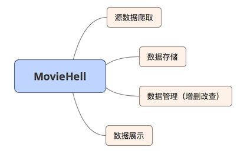
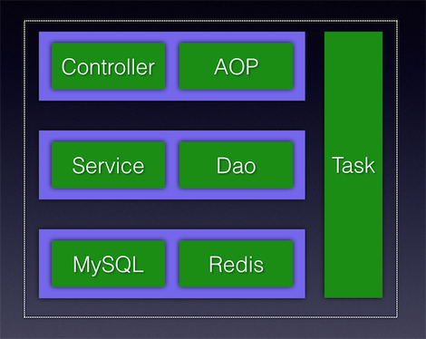
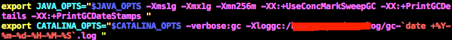
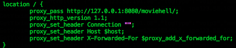
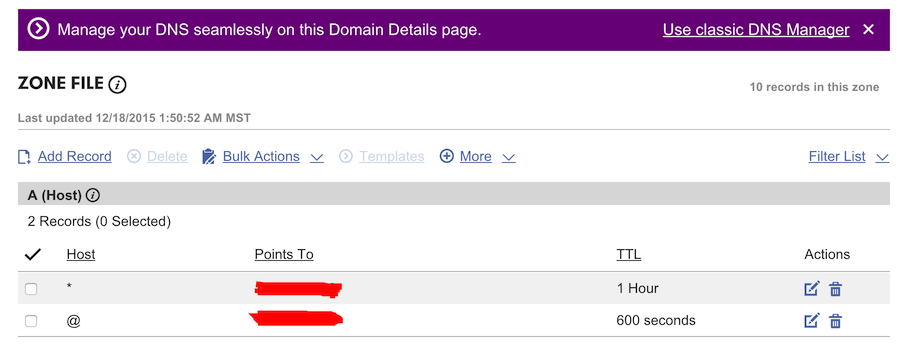

Movie Hell诞生之路
平时电影看的比较多（记得当时学校内网睿思上的电影都快被我看光了），所以觉得应该为这个兴趣做点什么。
首先归纳一下过程中涉及到的相关知识点：linux(ubuntu), mysql, spring, mybatis, webmagic(爬虫), js/html/css/jsp, nginx。大概就这么多吧，另外就是还有一些域名绑定之类的操作。
服务器选择
要搭建一个网站，首先你需要一台有公网地址的服务器，这里有很多云计算厂商可以选择，调研下来比较推荐的有这些，国内有阿里云、网易蜂巢。国外的有aws、digitalocean。个人对于PaaS类的服务不太喜欢，用起来太不自由，所以抛弃了原先申请到的免费新浪sae平台。最后选的是网易蜂巢，基于docker的全ssd容器。
数据源
既然是电影网站，所以首先考虑的就是数据来源问题，如今网上的电影资源几乎是应有尽有。第一步随意找一个自己常用的网站作为数据来源就可以了，等爬虫算法逐渐完善以后可以改为从多个网站爬取数据源。所以接下来是爬虫的使用，说到爬虫，第一时间想到的是python的Scrapy，java世界里也有许多成熟的爬虫框架，这里我们选用了WebMagic。爬虫的使用非常简单，只需爬取所需得网页，解析出自己想要的数据就可以了。
数据存储
数据源解决以后，那么接下来就是数据的存储问题。在关系型数据库方面，免费为第一目标的情况下，mysql是不二之选。当网站访问量较大时，我们需要对热点数据做内存缓存，所以还需要一个NoSql来支持，在我们的电影网站中，Redis是不错的选择，可以支持一些复杂的数据结构存储。ubuntu(Debian)上安装mysql命令：apt-get install mysql-server mysql-client，安装过程中安提示设置好密码即可。用ps aux|grep mysql查看mysql进程是否已经存在，如果没有可以用service start mysql来启动。成功以后用mysql -u root -p便可以进入mysql了。接着安装Redis，根据官网文档只需要几个命令就可以编译安装完成了。
|
|
可以通过redis.conf来修改一些配置，最后src/redis-server启动服务即可。java操作mysql的Dao框架有很多，这里选用熟悉的Mybatis，Redis只需要使用官方提供的Jedis即可。
代码架构
解决上述问题后，基本就可以进行编码了。代码逻辑很简单，主要就是以下几个功能：

代码包含的模块主要有：

controller接收http请求并处理；aop拦截指定的请求，主要负责日志打印、ip过滤、以及后续可以作为用户验证等功能；service和dao主要负责数据的增删改查处理；task则是作为定时任务存在，主要用于爬取源数据。
网站部署
代码编译打包完成后，接下来就是部署上线了。选择tomcat做servlet容器，从官网下载一个即可。可以在startup.sh中设置相关的jvm参数：

tomcat的应用部署，war部署或者class文件部署都可以，最后在server.xml中设置相应的参数。tomcat启动后，通过指定的端口应该已经可以访问了，但是作为线上部署，tomcat前面还应该有一个nginx作为请求代理，以便于服务控制。
ubuntu上安装nginx命令：apt-get install nginx，安装完成后在/etc/nginx/sites-enable/default中增加自己的代理配置，最后启动命令：/etc/init.d/nginx start。这时网站应该可以就通过ip访问到了。

是不是还觉得缺了点什么呢？是的，缺了域名！如果你的网站是个ip地址，那么我想没几个人能记住你的这个网站。域名从哪里来呢？从ICANN来。它俗称互联网名称与数字地址分配机构，但是你不能找他直接注册域名。注册域名这件事情由市场上的各家域名服务提供商提供，比如国内比较大的是万网，国外有著名的GoDaddy，这些都是可以注册你自己域名的地方。有一点要注意，如果你的域名注册商和ip都是在国内（大陆），那么就会比较麻烦，因为你的网站会需要备案。所以建议，ip和域名注册，至少有一项选择在国外。在GoDaddy注册了moviehell.net后，配置域名DNS如下：

等godaddy的全球节点同步完配置，就可以用域名访问网站了。如果你希望当用户输入moviehell.net时自动加上www前缀，可以在nginx中增加如下配置：
|
|
至此，一个简单的网站算是搭建完成了。当然作为一个在公网上服务的服务器，最好应该关闭用不到的端口，关闭icmp协议等等。配合iptables等工具做好管理。后续还有许多事情可以做，如增加数据来源，爬虫与web服务拆分，分布式部署，服务监控等等。